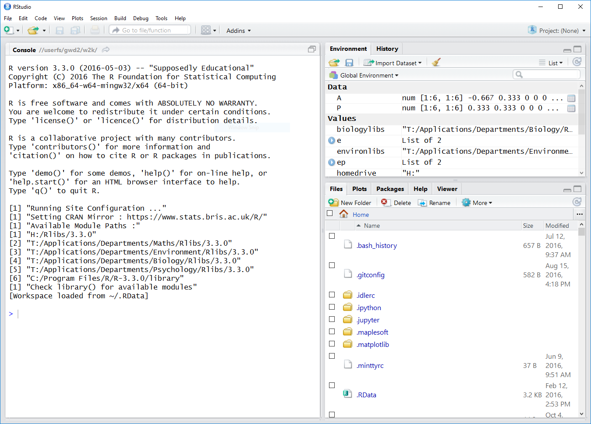
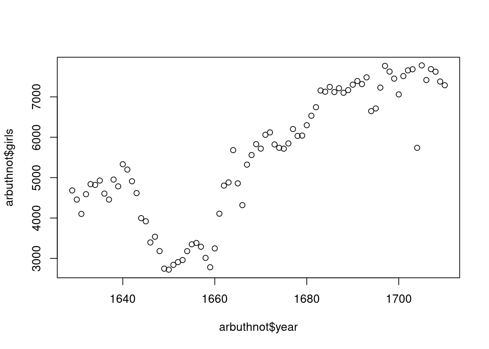
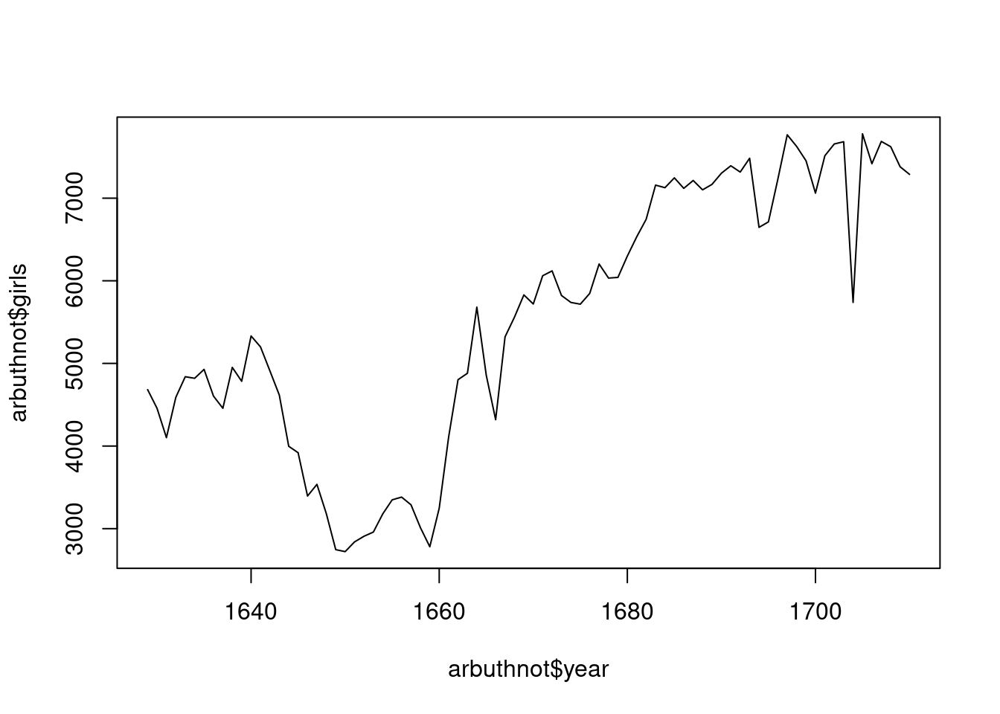

source("http://www.openintro.org/stat/data/arbuthnot.R")Computer Lab 1
Introduction to R and RStudio 1
The goal of this lab is to introduce you to R and RStudio, which you’ll be using throughout the course, both to learn the statistical concepts discussed in the lectures and also to analyze real data and come to informed conclusions. To straighten out which is which:
R is the name of the programming language itself;
RStudio is a convenient interface.
The R language is the standard statistical tool used by most statisticians at universities. Feeling comfortable using it is not only important for this module and any further statistics modules you may take at the Department of Mathematics of the University of York, it can also be an important factor for your future career (see the article “R skills attract the highest salaries”. Even though R is specially designed for statistics, it is in the list of the top ten most important programming languages compiled by the IEEE spectrum magazine.
As the labs progress, you are encouraged to explore beyond what the labs dictate; a willingness to experiment will make you a much better programmer. Before we get to that stage, however, you need to build some basic fluency in R. Today we begin with the fundamental building blocks of R and RStudio: the interface, reading in data, and basic commands.
The first step is to open RStudio. If you are on a campus PC, RStudio is already installed and you can open it from the Windows Start menu. Just start typing ‘RStudio’ into the search box on the start menu and then click on RStudio when it shows up. This will open up a window similar to that depicted below.

If you get a popup asking you whether you want to upgrade to a newer version of RStudio, simply click the “Ignore update” button.
The way I would like you to work with this lab is to have this pdf file open on the left half of your screen and RStudio on the right half. On a Windows PC you can move a window to the left or right half of the screen by holding down the Windows key and pressing the left or right arrow key.
The panel in the upper right of the RStudio window contains your Environment as well as a History of the commands that you’ve previously entered. The lower right panel has several tabs, including Plots where any plots that you generate will show up.
The panel on the left is where the action happens. It’s called the Console. Every time you launch RStudio, it will have text at the top of the console giving lots of information that you can mostly ignore, including the version of R that you’re running. Below that information is the prompt. As its name suggests, this prompt is really a request, a request for a command. Initially, interacting with R is all about typing commands and interpreting the output. These commands and their syntax have evolved over decades (literally) and now provide what many users feel is a fairly natural way to access data and organize, describe, and invoke statistical computations.
To get you started, enter the following command at the R prompt (i.e. right after > on the console). You can either type it in manually or copy and paste it from this document. (Just clicking on the link in this document is going to open the file in your browser, which is not what you want. Instead you want to load it into R, therefore you need to enter the command on the R console, not just click on it here.)
This command instructs R to access the OpenIntro website and fetch some data: the Arbuthnot baptism counts for boys and girls. You should see that the environment area in the upper right hand corner of the RStudio window now lists a data set called arbuthnot that has 82 observations on 3 variables.
As you interact with R, you will create a series of objects. Sometimes you load them as we have done here, and sometimes you create them yourself as the byproduct of a computation or some analysis you have performed.
Note that because it is accessing data on the web, the above command (and the entire assignment) will work in a computer lab, in the library, or in your dorm room; anywhere you have access to the Internet.
The Data: Dr. Arbuthnot’s Baptism Records
The Arbuthnot data set was compiled by Dr. John Arbuthnot, an 18th century physician, writer, and mathematician. He was interested in the ratio of newborn boys to newborn girls, so he gathered the baptism records for children born in London for every year from 1629 to 1710. We can take a look at the data by typing its name into the console and hitting Enter.
arbuthnotOr we can view just the first six lines by typing
head(arbuthnot)#> year boys girls
#> 1 1629 5218 4683
#> 2 1630 4858 4457
#> 3 1631 4422 4102
#> 4 1632 4994 4590
#> 5 1633 5158 4839
#> 6 1634 5035 4820What you should see are four columns of numbers, each row representing a different year: the first entry in each row is simply the row number (an index we can use to access the data from individual years if we want), the second is the year, and the third and fourth are the numbers of boys and girls baptized that year, respectively. Use the scroll bar on the right side of the console window to examine the complete data set.
Note that the row numbers in the first column are not part of Arbuthnot’s data. R adds them as part of its printout to help you make visual comparisons. You can think of them as the index that you see on the left side of a spreadsheet. In fact, the comparison to a spreadsheet will generally be helpful. R has stored Arbuthnot’s data in a kind of spreadsheet or table called a data frame.
You can see the dimensions of this data frame by typing:
dim(arbuthnot)#> [1] 82 3This indicates that there are 82 rows and 3 columns (we’ll get to what the [1] means in a bit), just as it says next to the object in your Environment tab. You can see the names of these columns (or variables) by typing:
names(arbuthnot) #> [1] "year" "boys" "girls"You should see that the data frame contains the columns year, boys, and girls. By this point, you might have noticed that many of the commands in R look a lot like functions; that is, invoking R commands means supplying a function with some number of arguments. The dim and names commands, for example, each took a single argument, the name of a data frame.
One advantage of RStudio is that it comes with a built-in data viewer. Click on the name arbuthnot in the upper right window that lists the objects in your environment. This will bring up an alternative display of the Arbuthnot counts in the upper left panel of the RStudio window.
Some Exploration
Let’s start to examine the data a little more closely. We can access the data in a single column of a data frame separately using a command like
arbuthnot$boysThis command will only show the number of boys baptized each year.
Notice that the way R has printed these data is different. When we looked at the complete data frame, we saw 82 rows, one on each line of the display. These data are no longer structured in a table with other variables, so they are displayed one right after another.
Objects that print out in this way are called vectors; they represent a set of numbers. R has added numbers in [brackets] along the left side of the printout to indicate locations within the vector. For example, 5218 follows [1], indicating that 5218 is the first entry in the vector. And if [43] starts a line, then that would mean the first number on that line would represent the 43rd entry in the vector.
R has some powerful functions for making graphics. We can create a simple plot of the number of girls baptized per year with the command
plot(x = arbuthnot$year, y = arbuthnot$girls) 
By default, R creates a scatterplot with each x,y pair indicated by an open circle. The plot itself should appear under the Plots tab of the lower right panel of RStudio.
Notice that the command above again looks like a function, this time with two arguments separated by a comma. The first argument in the plot function specifies the variable for the x-axis and the second for the y-axis. If we wanted to connect the data points with lines, we could add a third argument, the letter l for line.
plot(x = arbuthnot$year, y = arbuthnot$girls, type = "l")
You might wonder how you are supposed to know that it was possible to add that third argument. Thankfully, R documents all of its functions extensively. To read what a function does and learn the arguments that are available to you, just type in a question mark followed by the name of the function that you’re interested in. Try the following.
?plotCan you figure out how to produce a plot that shows both the points and the lines connecting them?
Notice that the help file replaces the plot in the lower right panel. You can toggle between plots and help files using the tabs at the top of that panel.
This tutorial is adapted from OpenIntro and is released under a Creative Commons Attribution-ShareAlike 3.0 Unported (http://creativecommons.org/licenses/by-sa/3.0/). This lab was adapted for OpenIntro by Andrew Bray and Mine Çetinkaya-Rundel from a lab written by Mark Hansen of UCLA Statistics; it was extended for the University of York by Gustav Delius, and then by Stephen Connor.↩︎